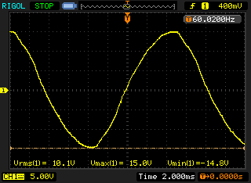
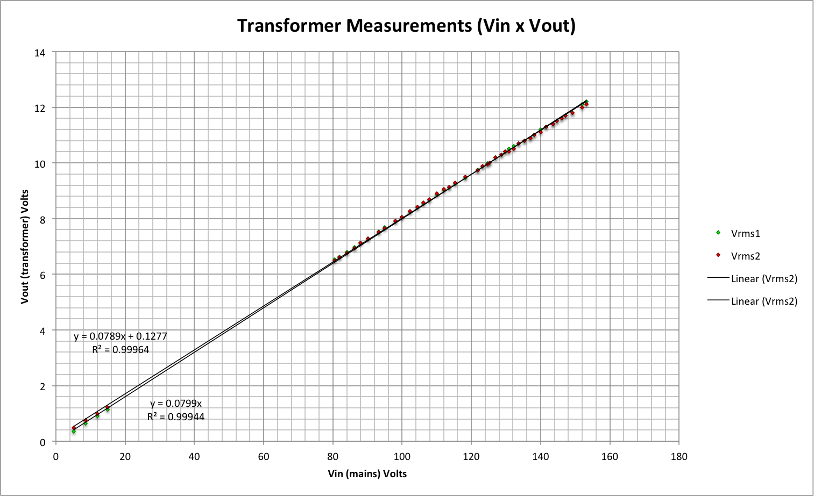

Hi, I'm from Brazil and voltage here in São Paulo is 127V.
So, I'm searching for a AC-AC adapter to perform the AC Voltage in my monitor.
If I can't find a commercially available one, can I build one?
Are those adapters only a transformer?
Archived Forum |
|
AC-AC Adapter for Brazil (127V)Submitted by Guest on Sat, 13/07/2013 - 22:02Hi, I'm from Brazil and voltage here in São Paulo is 127V. So, I'm searching for a AC-AC adapter to perform the AC Voltage in my monitor. If I can't find a commercially available one, can I build one? Are those adapters only a transformer? » |
Re: AC-AC Adapter for Brazil (127V)
The ac-ac adapter is indeed 'only' a transformer, but it is cased and safe and approved for sale in Europe. Provided you properly house and protect the transformer so that it is safe, then you can use a normal open-frame or, with a suitable pcb, a pcb-mounting transformer. The 'standard' one gives about 11 V rms out on no-load at normal mains voltage, but any sensible voltage can be used, from 2 V upwards, provided you change the voltage divider resistors to suit (see http://openenergymonitor.org/emon/buildingblocks/measuring-voltage-with-...). If you can find the information, choose one with the least voltage distortion and phase error. The more efficient the transformer, the better it is likely to be for this purpose - but I cannot guarantee that.
You can of course use a 230 V adapter if you change the voltage divider resistors, no harm will come to the adapter by running it at half the voltage it was designed for.
Do not be tempted to have a direct metallic connection and resistors to reduce the voltage. If you do, your whole project must be regarded as 'live' and could be lethal if there was a fault. The transformer should eliminate that risk.
Re: AC-AC Adapter for Brazil (127V)
Hi mlemos,
I'm from Brazil too and build my own power adapter 9V AC, follow below in portuguesh:
Fiz desta forma: Peguei uma fonte antiga de 9V DC que estava parada a muito tempo, destas que tem um transformador interno, e retirei o circuito que transforma de AC para DC (geralmente é um plaquinha que tem 4 diodos ponte + capacitores). Ou seja, deixei somente o transformador, neste caso sempre meça a voltagem com um multimetro no modo AC para ter certeza que a voltagem fique no maximo em 11/12V AC.
Liguei no emontx e depois só precisei fazer a calibração no programa para minha voltagem (127V tb moro no estado de SP), para fazer isso, eu medi a voltagem da rede ussando um voltimetro e fui ajustando os valores da chamada da função emon1.voltage().
Para mim, o valor ideal foi o abaixo:
emon1.voltage(2, 134.7, 1.7);
Espero ter ajudado, qualquer duvida entre em contato.
Re: AC-AC Adapter for Brazil (127V)
That is a good solution. If the transformer secondary voltage is more or less than 11 V a.c. you can change resistor R13 to be bigger or smaller. The important voltage is the voltage measured across R14 should be about 1.1 V a.c. at the highest mains voltage you expect.
Re: AC-AC Adapter for Brazil (127V)
I also am Brazilian. You have the design posted somewhere? I live in Goiânia and am planning to build the entire project energy monitoring. Can you help me?
Por favor.
Re: AC-AC Adapter for Brazil (127V)
Hi farmsid,
No, I don't have this design. But the convert process power supply 9V DC to AC is very easy! Just open the supply box and leave only transformer, disconnecting all others components. Measure the AC voltage to sure that's is lower than 12V and plug the 2 out wires on AC plug in your emontx.
I build my project to measure and record my solar energy power production using emontx, it's monitoring the output of 10 in 10 seconds and record the data in the mysql table hosted in my router with openwrt firmware using arduino+ethernetshield, so I can analyse graphically see daily production via my website.
Alex.
Re: AC-AC Adapter for Brazil (127V)
Hi, I'm planning to use a transformer 9+9AV 250mA as part of my Voltage Sensor. However I'm not sure if I can use it or if it is going to generate any problems on the measurements. I did some measurements to try to understand its behaviour and this is what I got:
1. Wave Format around Vin of 127V

2. Measurements of Vin and Vout varying Vin from ~6Vac to ~150Vac

However, I was not to measure "phase error" and "regulation" since I'm not sure on how to do that with the equipment I have. I have an OK digital oscilloscope and a two cheap digital multimeters.
So my questions are:
1. Do I have to worry with "regulation" and "phase error"?
2. What should I do?
Thanks in advance!
Re: AC-AC Adapter for Brazil (127V)
You do not need to worry about regulation, because the load does not change. (Regulation is the percentage by which the output voltage rises when the rated load is removed.) Provided the output voltage is close to 11 V rms on no-load, it will be fine. And if not, simply change one resistor in the voltage divider circuit so that the voltage presented to the ADC stays within range. Robin's Tools can show if that is happening - it must not "clip" - if you measure a voltage sample of 0 or 1023, it is BAD.
You should worry about phase error. Phase error will mean that your measurement of real power is incorrect, especially during times when you have a very low power factor. Phase error changes with voltage. Ideally the output wave is perfectly aligned with the input wave at all voltages, in reality this does not happen. The more constant it is (first), and the smaller it is (second), the better. You might find that a transformer with a 230 V primary, 15 V or 18 V secondary performs better.
Re: AC-AC Adapter for Brazil (127V)
Thanks Robert,
Yep, after studying the documentation I could understand the voltage divider circuit role and I believe I'll be able to do the necessary adjustments easily. However, I'm not sure on the phase error.
Do you know how can I measure the phase error of my transformer?
I have a digital oscilloscope with two probes here but in my first attempt I almost blew everything here, hehehehe!!! Luckly the protection circuit of the oscilloscope and my home shut everything down before any damage could happen. I'm not able to run the test circuit from the documentation using the sound board as an scope.
Any suggestions on this?
Re: AC-AC Adapter for Brazil (127V)
If you do not know how to do it safely, DO NOT DO IT. It is not funny to risk hurting, or worse, killing yourself, for the sake of a measurement.
Re: AC-AC Adapter for Brazil (127V)
Hi Robert, yep, that's the idea.
Can you point me to instructions on how to do that safely?
[]s
Manoel
Re: AC-AC Adapter for Brazil (127V)
Sorry, but that is very difficult from a distance. I do not know what caused the problem when you tried, so I have little idea how to get around it. I suspect it was because the chassis of your oscilloscope is earthed, and you connected the earthing lead of your probe to a place where you should not have done.
Can you tell me what sort of electricity supply you have out of the ones described here. I have TNC-S, that means that while the neutral wire is nearly at ground potential, I cannot connect an oscilloscope earth to neutral because it would create a second parallel path for the neutral current, and high currents might flow.
I could use a sound card because my laptop power supply is double-insulated, and by making certain that I had no other earth connection I could make the connection to mains neutral in moderate safety, BUT I was very aware that should the neutral become disconnected accidentally, everything would be live, so potentially dangerous.
This method promises the best accuracy because the data can be imported into a spreadsheet for analysis. I have been working with MartinR on a Discrete Fourier Transform that accurately measures the phase shift of the fundamental mains frequency and ignores distortion produced by the harmonics.
You must read the instruction manual for your oscilloscope on how to safely measure the mains voltage. Do not be tempted to disconnect the ground connection to your oscilloscope. That was standard practice when I was an apprentice 45 years ago, it is now illegal in the UK.
Re: AC-AC Adapter for Brazil (127V)
Some scopes have a nifty feature that let you trigger on their own AC supply zero-crossing, so you might be able to use that trigger while viewing the low voltage output of your AC-AC transformer.
If all you care about is the relative phase shift between the CT and the AC-AC transformer, you could wrap the CT around the feed to a resistive load on one channel, and have the AC-AC transformer on the other. That won't have any reference to the actual mains zero crossing, so won't be helpful for writing a standalone transformer report, but should at least put your mind at ease about whether it's fit for purpose.
Re: AC-AC Adapter for Brazil (127V)
I think Manoel needs a 1:1 mains isolating transformer and he needs to set up his own TN-S system so that his 'scope earth and the neutral to the transformer under test are connected together and to his local earth and there is no connection to his incoming mains neutral on the secondary side. It still leaves the risk of handling live connections but removes the possibility of a residual current trip, which I'm guessing was his problem.
[dBC - if Manoel is going to use MartinR's DFT method, he needs synchronous recordings of both primary and secondary voltage, so the mains trigger won't help, neither will a 'scope that can't output the data. If he uses the timing of the zero crossing, it is subject to errors if the harmonic content of primary and secondary are markedly different, which I'd originally disregarded.]
Re: AC-AC Adapter for Brazil (127V)
Thanks again Robert, it seems it is much more complicated than I thought. Let me rephrase my problem:
1. I'm building an Energy Monitor to be used in Brazil, more specifically in São Paulo.
2. Mains here at home is three phase with nominal voltage of 127V.
3. I want to measure real power and power factor on my installation.
Well, the problem for me on localizing the OpenEnergyMonitor project to Brazil is that a major component is not available around here. The AC-AC adapter. So I'm trying to find a way to build one using some AC-AC transformers. However, to be more confident on the measurements I need to know how much error I'll incur if I do not take things like the phase error in consideration.
Do you believe this is that relevant for my project?
Any ideas on paths I could pursuit to solve that?
Re: AC-AC Adapter for Brazil (127V)
I now understand your problem a bit better.
If you have three phases, the first point to consider is how accurately the three phase-neutral voltages match at all times under all loading conditions. Remember power/energy is at worst proportional to V2 and at best constant against varying voltage (those are for resistive load and (say) a computer power supply). If the three voltages always remain close enough - and that's for you to decide depending on the inaccuracy you can accept - you only need to measure one voltage, if you decide that is not good enough, then you need to measure the three phase voltages.
You will almost certainly get a better result by using a 230 V to 18 V ( or 9-0-9 V ) transformer and running it at half voltage than you will an unknown and untested transformer, or you can use the shop "Ideal" AC adapter and change one resistor on the emonTx PCB to suit the lower voltage output that you'll get.
If you decide you only need to measure one voltage, then you can use for example MartinR's 3-phase "stored V" sketch that uses a stored copy of the first voltage to calculate the power of the other two phases. Otherwise, you can use his "Full Fat 3 phase" sketch with 3 emonTx's [see the note below]. Both these sketches have in the software (as do all the sketches) a way to artificially shift the voltage wave by interpolating or extrapolating between two measurements. This will cancel a constant phase difference between the voltage and current transformers (and you are only interested in the relative difference, as dBC wrote earlier). Unfortunately, the c.t's phase shift varies with current and the v.t's phase shift varies with voltage. It ought to be possible to correct both of these with a lookup table for phasecal, but as far as I know nobody has done it yet. So the least bad phase error is the one that varies the least. (And perfection would be when both are unchanging and the difference is equal to the timing difference between reading voltage and current.)
The phase angle error is much more important at low power factor of course (because the software uses the definition p.f. = real power / apparent power), so as the voltage and current waves approach a 90° difference, a small error becomes very significant. It is possible using MartinR's PLL sketch to delay the voltage wave by exactly 90° and compute reactive power (var) directly, then you can get a much more accurate phase angle, and know whether it is leading or lagging (which you otherwise don't know). At near-unity power factor, any phase error in the measurement makes very little difference. If you have a large number of very small loads that generally tend to have poor or very poor power factors, then the phase error is important. So the types of load that you have and which is dominant will define how much error you will see.
[It should be possible to measure 3 voltages and 3 currents using one emonTx, however as I'm assuming you want the accuracy that continuous measurement will give you as compared to the sampling approach of the demonstration sketches and the emonLib library, I am discounting this because the sample rate on each phase would be down to about 25 per cycle.]
Then you have to consider the calibration of the magnitude of the voltage or current. Both these depend on the internal reference in the ADC, both depend on resistors on the PCB and both depend on the respective transformer. There are calibration constants in the software that will largely correct all of these errors (the c.t. will still have a small current-dependent error due to its internal voltage drop). You must calibrate these against another meter - under the worst case conditions the total error in each can approach 15%, and that is much worse than any multimeter.
Many users have found that with careful adjustment of these calibration variables (3 for a single-phase system that we have in the UK, you would have 7 or 9), over a period of time it is possible to get the recorded energy to match the supply company's meter to better than 2%, and some claim around 1%.
So while I understand that you want the best possible accuracy, I think you might be worrying too much.
Re: AC-AC Adapter for Brazil (127V)
Hi Robert, thanks again for this very detailed reply.
I'll follow your advise and follow with the project without worrying too much with precision.
With things running, I'll get back to this issue and I'll call you again for help.
Thanks!
Re: AC-AC Adapter for Brazil (127V)
Hi,
I'm from Brazil as well and live in São Paulo/SP. I have emontx working perfectly here.
A normal line here has 2 phases and 1 neutral. Each phase is 110v. On your electrical board you'll see that 3 wires arrives from the street. 2 of them are live 110v and the other one is neutral. You can identify it by wire colors or using a multimeter to measure voltage across the 3 wires.
To measure correctly, you'll have to use 2 transformers and 2 CTs. I use only 1 transformer and 2 CTs. I measured and my 2 110v phases has minimal voltage differences like 0.2v so I assume both are identical.
It's running for 4 months already. The difference between what my emontx(modified to send trough an XBee) measured and my monthly electrical bill is only 1.4 kwh. I have sure that making minimal calibration I can have 100% match however I'm ok with this 1.4 kwh difference.
Thanks,
Wagner
Re: AC-AC Adapter for Brazil (127V)
Ok,
I'll correct my informations, as I talk to some electrical engineers here in Brazil, they explained that we have a 3 phase system(3 x 110v + 1 neutral). However they deliver only 2 phases to most residential areas. They are out of phase by 120 degrees. So, we don't have a full cycle of 360 degrees.
Is it true/possible? How can we adapt emonlib to take care of this scenario?
Re: AC-AC Adapter for Brazil (127V)
You can easily test whether you have 220 V centre tapped to neutral/earth, or two phases out of three, by measuring the phase-neutral voltages and the phase-phase voltage.
If it is centre-tapped to neutral, the phase-phase voltage equals the sum of the two phase-neutral voltages (i.e. 220 V).
If it is two phases out of a 3-phase system, the phase-phase voltage equals the phase-neutral voltage × √3 (i.e. 190 V).
How to adapt the emonTx? If your loads are all connected phase-phase, you use one AC-AC adapter to measure the phase-phase voltage and measure one line current. If some loads are connected phase-neutral, you need two AC-AC adapters, 2 voltage inputs and two current transformers. There are two unused analogue inputs and you could duplicate the AC input circuitry on stripboard and connect to the emonTx to use one of the spare inputs.
Re: AC-AC Adapter for Brazil (127V)
Hello, I'm Brazilian too.
I wonder if someone can help me. I'm building an electric current meter following the instructions here: http://openenergymonitor.org/emon/buildingblocks/how-to-build-an-arduino...
Only that my measurements are wrong, it seems not hit calibration.
emon1.current(1, 60.60); // Current: input pin, calibration.
Could you guide me?
Re: AC-AC Adapter for Brazil (127V)
Did you follow the instructions exactly? If you do not have the correct components and the correct calibration coefficients, your readings will be wrong. But writing "it seems not hit calibration" does not tell anyone what the problem might be, so no-one can help you. Give more details, and someone might be able to help you.
If you wish to try to find the problem yourself, all the theory you need is in the Building Blocks section.
Re: AC-AC Adapter for Brazil (127V)
Sorry guys. For a matter of time i will post in portuguese.
Colegas do Brasil, estou implementando meu monitor e comecei os testes na rede ontem, porém tenho algumas dúvidas e gostaria de saber se alguém que já tem experiência pode dar uma força.
Sou de Belo Horizonte, rede monofásica 127v em casa, fiz a calibração básica no software e medi alguns aparelhos com o arduino alimentado via USB do PC. Os valores mostrados ficaram muito próximos da potência nominal dos aparelhos que medi. Até aí tudo bem.
Daí, adicionei um Ethernet shield na receita, implementei o código e passei a enviar os dados para meu banco de dados. Tudo Ok também.
Porém, quando larguei o PC de lado e pluguei o CT na fase principal da casa usando como alimentação pro Arduino uma fonte genérica de 9v/1A as medições ficaram totalmente avacalhadas. Exemplo: imaginem que naquele momento o consumo aproximado da minha rede era de 200w; o monitor não saia da casa dos 90w.
Achei estranho e resolvi trocar a fonte que alimentava o Arduino. Resultado: o monitor passou a me informar constantes 500 a 600w nas leituras.
Ou seja, parece que a fonte de alimentação do arduino estava interferindo nas leituras. Como posso ajustar isso?
Obs: Não estou usando aquele circuito AC/AC pra ajudar na calibração. Seria este o problema?
Muito obrigado desde já!
Re: AC-AC Adapter for Brazil (127V)
The first thing you must measure is the 5 V d.c. to your Arduino. Is this always 5 V? It must always be a constant 5 V. If it changes from 5 V, the calibration of the current transformer will be wrong, therefore the power will be wrong also.
Re: AC-AC Adapter for Brazil (127V)
Robert, got the pins measured:
Using the USB port as supply
3.3v = 3.28v
5v = 3.64v
Using a 6.5v/1A supply
3.3v = 3.28v
5v = 4.5v
All measures were taken with the Ethernet shield attached(is this wrong?)
Thanks in advance!
Re: AC-AC Adapter for Brazil (127V)
I think there is too much current being taken from the 5 V supply - your USB port on the computer cannot supply enough therefore the voltage has fallen to 3.64 V! There could be two reasons: (1) the port cannot supply enough current, or (2) the Arduino and/or the shield has a fault that is causing it to demand too much current. You must find out which!
Are you using the emonTx Shield + Ethernet Shield on your Arduino, or have you made the circuit for the c.t. and voltage on prototype board?
This http://forum.arduino.cc/index.php?topic=13492.0 tells me the Ethernet Shield draws approximately 150 mA and the Arduino itself 30 mA, the emonTx shield draws very little - only the LED, the 5 V regulator is a 1 A device, the USB port should be capable of supplying 500 mA, so in theory there should not be a problem.
I think you are looking for a fault somewhere. You must unplug the shield or shields and measure the voltage on the 5 V rail or measure the current. When the 5 V rail is 5 V and the current is less than 500 mA, all is well. When it falls below 5 V, you have found what is causing the problem.
Re: AC-AC Adapter for Brazil (127V)
Made a circuit for CT. No emonTx shield.
I will check voltages again without the Ethernet shield.
See my circuit below

Thanks again! :)
Re: AC-AC Adapter for Brazil (127V)
Another question, software side...
emon1.current(3, 111); //port, iCAL
Can i modify the iCAL parameter freely to match my needs or i must always apply the formula iCAL = (100 / 0.050) / burden = 111.11 ?
Thanks!
Re: AC-AC Adapter for Brazil (127V)
1. Your c.t. interface looks OK to me. That cannot be drawing too much current.
2. You should change iCAL to correct for component tolerances - it depends on the accuracy of your c.t., your burden resistor (15 Ω) and the actual voltage of the Atmel processor's internal reference voltage (which could be 9% in error).
3. 111.1 is wrong for a 15 Ω burden resistor, and the 15 Ω burden resistor is probably wrong too! You calculate the burden resistor so that, at the maximum current you want to measure, you have a voltage of slightly less than 5 V peak to peak across it (say 95% of 5 V). Then iCAL can be calculated as (c.t. ratio / burden resistor value) [The full theory.]
Example: ct: 100 A : 50 mA, you want to measure to 80 A: Rburden = ( 0.95 * 5 / ( 2 * √2 ) ) / ( 0.050 * 80 / 100 ). If you chose 39 Ω for your burden (always choose the smaller preferred value unless it is very close), you would start with iCAL = 51.28
Re: AC-AC Adapter for Brazil (127V)
Hello Robert.
I bought this shield:
http://shop.openenergymonitor.com/emontx-arduino-shield-v2-smt/,
to measuring consumption of my home, however I am with a question about this Resistor Burder.
This Burder shield I bought the resistor has a value of 33ohms (looked schema and I think that's right). performing the calculation suggested here:
http://openenergymonitor.org/emon/buildingblocks/ct-and-ac-power-adaptor...
I found the calibration value of 60.6. constantcurrent(100 / 0,050) / 33 = 60.6060
I'm on the right track or did it wrong?
I'm not good at Electric my specialty is in developing programs but I am venturing in this project to use in my home.
Re: AC-AC Adapter for Brazil (127V)
Yes, that is all correct. 60.6 is the value used in the emonTx Shield sketch on Github (link in the top banner of this page!)
Re: AC-AC Adapter for Brazil (127V)
Strange, I did a test now in the shower and current measured was 11.59 and in accordance with the specifications of the shower was to give 43A, I = 5500/127.
I have to get a amperimeto pliers to compare values.
Re: AC-AC Adapter for Brazil (127V)
That calibration is only correct for the YHDC 100 A c.t (SCT-013-000) or one with a ratio 100 A : 50 mA that does not have an internal burden resistor. Which c.t. are you using?
Re: AC-AC Adapter for Brazil (127V)
The model is this SCT013-000 100A: 50mA, bought here:
http://www.projetoarduino.com.br/sct-013-000-p61
Just one question, the calculated value of the current shower is this so? I'm still not with ammeter.
Re: AC-AC Adapter for Brazil (127V)
Yes, the current you calculated should be correct. Did you install the c.t. around only the line conductor or only the neutral conductor, and not both? Have you pushed the plug on the c.t. all the way into the socket? If you can see any metal of the plug, it is not pushed all the way in. Is your Shield working at 5 V?
Re: AC-AC Adapter for Brazil (127V)
Robert, measure current ammeter with a shower and got values between 15:30 and 16.5 in emontx values were between 15.75 to 15.83. Now I think I was pretty close to real. The calibration value I had to find the "trial and error" iCAL = 54.60.
Re: AC-AC Adapter for Brazil (127V)
That agrees with the theoretical value, to within acceptable limits (the variation can be 3% for the c.t., 1% for the burden resistor and 11% for the internal voltage reference inside the Atmel processor - added together that is 15 % at worst and you are within that at 10%. So you were misled by the power rating of your shower!
Re: AC-AC Adapter for Brazil (127V)
yes, I will make other measurements in my parents' house to compare the values, because this value measured with ammeter of the current of shower not seem right.
Thanks for everything.
Re: AC-AC Adapter for Brazil (127V)
Is your shower temperature-controlled? If it is, 5.5 kW might be the maximum power, and at low water flow rate and high inlet water temperature and low outlet water temperature, the power will be much less. 15-16 A could be correct - my shower in the summer runs at 35% of maximum power, and you have almost exactly the same. If you can measure the temperature difference between cold water in and hot water out, and measure the flow rate, then the power (kW) = flow rate (l/s) x temperature rise (°C) x 4.2 + a little for heat lost to the air.
Re: AC-AC Adapter for Brazil (127V)
good day, I'm trying to build the AC-AC adapter from this link (to Brasilia where the voltage is 220V on one wire):
[1] http://openenergymonitor.org/emon/buildingblocks/acac-buffered-voltage-bias
which is based in :
[2] http://openenergymonitor.org/emon/buildingblocks/measuring-voltage-with-...
.
in the first (1) they uses a amp. op. called lmv321. any one knows why this amp. op. was selected and which are its equivalents?
sorry about my poor language.
Re: AC-AC Adapter for Brazil (127V)
Any similar op.amp that will operate from a single supply voltage of 5 V will be suitable, nothing special is necessary.
Find a similar op.amp that you can buy locally and if you are not sure, post the type number and I will check it.
Re: AC-AC Adapter for Brazil (127V)
Hi Robert!
Long time! :-)
Got the 5 and 3.3v pins measured without any shield attached. Look this:
Supply = PC USB
3.3 = 3.28v
5 = 4.65v
This 4.65v on 5v pin may indicate that i have a faulty arduino?
Thanks in advance!
Re: AC-AC Adapter for Brazil (127V)
"This 4.65v on 5v pin may indicate that i have a faulty arduino?"
That certainly is lower than I would expect - that is 7% low. I would expect your meter to be within 1% on the 5 V dc range, so at best the supply is 6% low. The standard 5 V regulator tolerance band is 4.75 - 5.25 V, which is ±5%, so I did think there could be a problem there. But when I look at the Arduino Uno circuit diagram, I see a transistor switch that feeds the 5 V from the USB supply, and that could easily drop the extra 0.1 V.
From what I can see, the Arduino itself should draw about 25 mA which should be well within the current that a normal USB port can supply. But you might find that when you add the Ethernet Shield, together they are taking too much current for your USB port to supply. I cannot find any data for the current that the Ethernet Shield draws, so I cannot say if this is the problem.
I think what you must do is connect the Ethernet shield, then follow the circuit diagrams and carefully check the voltages on what should be the 5 V supply all the way from your computer USB port through to the shield and see where the voltage is being dropped. Also remember to check that all the GND points are at the same voltage! It is not unknown for a bad ground connection to cause a lot of problems.
Re: AC-AC Adapter for Brazil (127V)
Hi folks!
Another question.
Thinking in simplicity, can i use just 1 power brick to supply both the AC/AC voltage circuit AND the DC line for the emonTX?
Like this:
OUTLET -> SUPPLY CT ---------> TO AC/AC CIRCUIT
|
-------> TO RECTIFIER ---> ETC ----> 5V DC OUTPUT
Is it possible?
Thanks again!
Re: AC-AC Adapter for Brazil (127V)
That's what is inside the emonTx V3! The problem is, the impedance of the supply transformer (it is NOT a current transformer - c.t.) means that the current pulses as the rectifier in the 5 V DC supply charges the smoothing capacitor distort the waveform and give you inaccurate readings, in addition to that you cannot use the normal full-wave bridge rectifier circuit with 4 diodes, you must use a half-wave rectifier with a single diode.
In theory it is simple. In practice, to do it optimally with the minimum distortion needs very carefully selected component values. If you need a lot of current at 5 V, you might find it is impossible. That is why there is a strict limit on the accessories you can have with the emonTx V3.
Re: AC-AC Adapter for Brazil (127V)
hi am from Brazil and I am having difficulty in measuring the power factor .. I 'm finishing the course in electrical engineering and my job is to make a meter .. I rode the circuits and have tested , I'm with the sensors , I'm using Arduino at mega 2560 .. Medi the current and the shower pressure and gave a power factor equal to 1 , the current and the voltage was giving a wrong value , however I used an equation that was on the site and there was right .. However when I measure the power of an engine with power factor 0.58 , the meter showed one .. what should I do to correct the error ? I suspected the frequency difference between uk and Brazil , but honestly do not know .. I will test the calibration equation for the phase shift , please if anyone can help ..: / I will deliver 6 days now and the program is faulty ; /
Re: AC-AC Adapter for Brazil (127V)
The way that emonLib calculates power factor is not affected by frequency. You can see the calculation in emonLib.cpp Therefore, you must look elsewhere for the problem.
The phase error of your voltage transformer and of your current transformer will vary according to the voltage and the current respectively. The time between reading voltage and current, when measured in electrical degrees, will also be different on a 60 Hz system. Therefore, your PHASECAL correction will be different to ours for a 50 Hz system, and if you set it with a high power load and your "engine" was very low power, then the phase error of the current transformer will be different and that will make the real power reading incorrect and therefore the power factor will also be incorrect.
You can see how the phase error of the current transformer changes with current in the report in Building Blocks.
It is also possible, if the "engine" current is small, that your current readings contain a significant proportion of electrical noise, which will also make the reading incorrect.